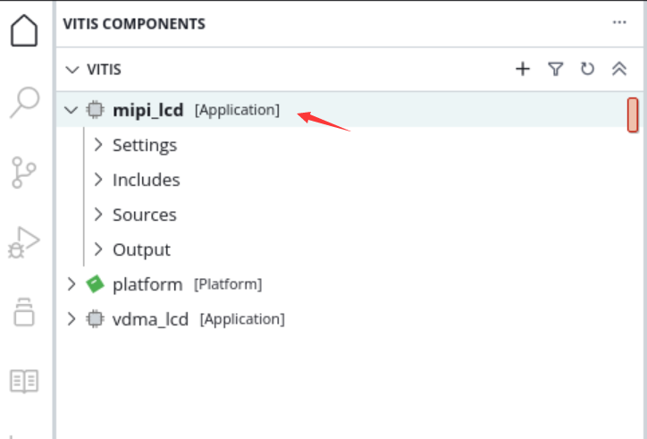

第八章 整体工程及实验#
本章将板卡大部分外设集成到Vivado工程。
8.1 Vivado工程建立#
整体框图如下，两路MIPI摄像头通过VDMA写入DDR4，LVDS LCD通过VDMA从DDR4读出图像数据。具体搭建过程不再描述，可通过TCL脚本恢复Vivado工程。
8.2 Vitis实验#
8.2.1 基于VDMA的LVDS LCD显示实验#
本实验主要功能是ARM在DDR中制作color bar，VDMA读取这块空间，发送给LVDS LCD显示模块。下载程序：

显示结果如下：

8.2.2 MIPI摄像头采集显示实验#
本实验主要功能是配置单个或两个MIPI摄像头，将图像显示到LCD上面，也是通过VDMA实现。
Run下载程序
若是想显示单个或两个摄像头，可以修改config.h里的宏定义，重新编译下载即可

显示效果

8.2.3 MIPI摄像头双目采集以太网传输实验#
前面介绍了MIPI摄像头的LCD显示，但有些场合下，需要把视频传输到上位机，便可以利用以太网进行数据的传输，本章利用LWIP的udp将摄像头数据传输到上位机。
下面介绍LWIP部分内容，与上位机通信时，采用UDP传输，在UDP数据包中自定义了协议，如下所示：
一、获取板卡信息
（1）询问命令（共5字节，由上位机通过以太网发送）
字节数 |
1 |
4 |
命令信息 |
Header |
0x00020001 |
（2）应答命令（共16字节，由开发板通过以太网发送）
字节数 |
命令信息 |
1 |
Header|0x01 |
4 |
0x00020001 |
6 |
板卡MAC地址 |
4 |
板卡IP地址 |
1 |
0x02 |
二、获取数据
（1）控制命令（由上位机发送数据请求）
字节数 |
命令信息 |
1 |
Header |
4 |
0x00020002 |
6 |
板卡MAC地址 |
1 |
摄像头通道选择，数值1代表仅打开摄像 头1，数值2代表仅打开摄像头2，数值3代表同时打开两个摄像头 |
1 |
启动信号，0表示关闭上位图像显示，其他表示打开图像显示 |
（2）应答命令（由开发板发送）
字节数 |
命令信息 |
1 |
Header|0x 01 |
3 |
0x 000200 |
1 |
通道标识，数值2代表摄像头1，数值3代表摄像头2 |
3 |
序列号，以太网包序号，用于上位机识别 |
N |
图像数据 |
每个UDP包都包含有Header，在第一个字节，其格式如下：
比特位 |
值（0） |
值（1） |
bit 0 |
查询或控制 |
应答 |
bit1~bit7 |
随机数据 |
注：当应答时，高7位随机数据保持不变，bit0设置为1
工作流程为：
上位机发送询问命令
开发板应答询问
上位机发送控制命令请求数据
开发板发送数据
步骤3和4循环
实验步骤#
如果在vitis中勾选lwip库

并且做参数配置


重新编译platform
Build工程，连接好板子摄像头，电源，串口，PS端网口ETH1，然后点击Run下载程序


如果有DHCP服务器，会自动分配IP给开发板；如果没有DHCP服务器，默认开发板IP地址为192.168.1.10，需要将PC的IP地址设为同一网段，如下图所示。同时要确保网络里没有192.168.1.10的IP地址，否则会造成IP冲突，导致无法显示图像。可以在板子未上电前在CMD里输入ping 192.168.1.10查看是否能ping通，如果ping通，说明网络中有此IP地址，就无法验证。
没有问题之后打开串口软件。

串口打印信息如下，检测出网卡速度，设置的IP地址

打开Vivado工程文件夹，打开videoshow.exe

软件扫描到两个摄像头，可通过勾选来选择相应的摄像头显示，点击播放

显示效果如下，如果想重新选择显示通路，在软件屏幕上双击，回到选择界面，再次选择要显示的图像。
打开任务管理器，可以看到网络带宽为750Mbps左右